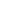

CONNECT



I am a marketing communications and web development profesional based in Seattle with extensive experience working within higher education, healthcare, and non-profit environments.
I have a passion for the application of Universal Design principles to improve web accessibility for all.
I am seeking to leverage my depth of experience and development skills to pursue a career focused on UX Design, Content Strategy, and Information Architecture.